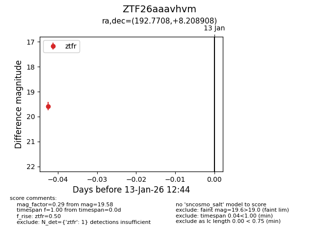
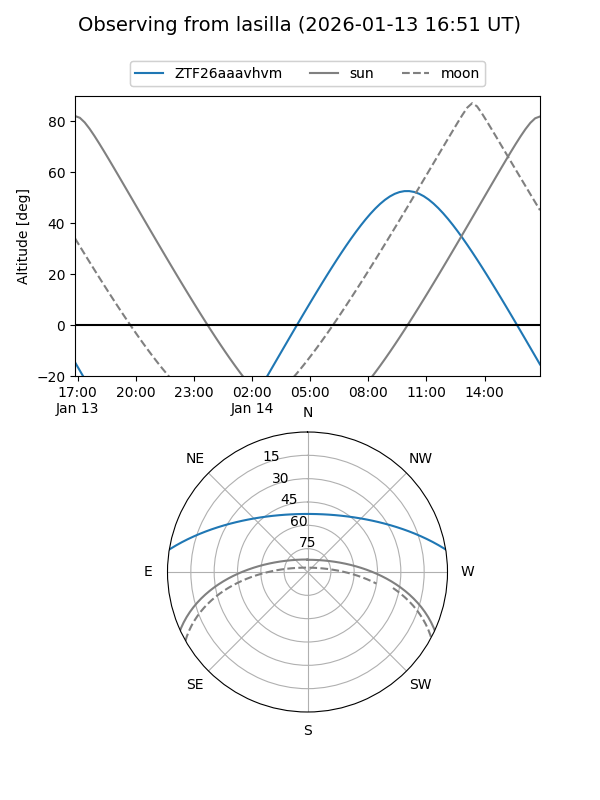

ZTF26aaavhvm
Target ZTF26aaavhvm at 2026-01-13 12:45
Aliases and brokers:
FINK: link
Lasair: link
ALeRCE: link
alt names
ZTF26aaavhvm (ztf,fink_ztf)
Coordinates:
equatorial (ra, dec) = 192.7708,+8.20891
equatorial (HMS+DMS) = 12:51:05.00,+08:12:32.07
galactic (l, b) = (302.6613,+71.08047)
Flags:
Photometry:
last ztfr=19.58
1 ztfr detections
Lightcurve

Visibility


Additional plots